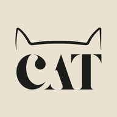

Taller · Materia y SerEsta clase no empieza con la máquina. Empieza contigo y con la materia que trajiste, que nadie más trajo igual.
Son 4 paradas de unos 10 minutos. No hay respuestas correctas: la ciencia aquí es patafísica, el estudio de las soluciones imaginarias y de las excepciones. Lo que escribas se queda en tu teléfono, tú decides si lo compartes.
Tu carrera es un traje que te prestaron. Veamos quién lo está usando.
Cada razón es una capa. La de arriba la dices en voz alta, la de abajo casi nunca.
Todos pedimos las mismas herramientas, pero cada quien llegó con un residuo distinto. Nadie más tiene exactamente el tuyo.
Esto fue una probada. En el curso completo de TRATAK CAT combinas realidad virtual, impresión LDM y cultura biomaterial para llevar esta relación con la materia a objetos reales.
Ver el plan de estudios Quiero saber más del curso